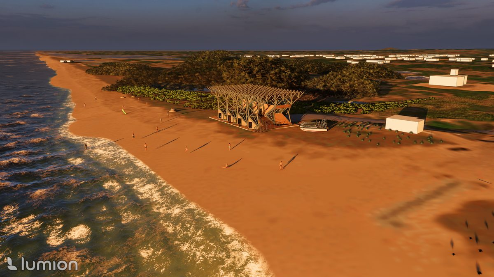

01
Recreation · Studio · Core III
Pool House
Intimate recreational structure exploring materiality, natural light, and the dialogue between interior threshold and open landscape.
View project

02
Environmental · Waterfront · Core IV
Mangrove HWB
Environmental design at the edge of land and water — ecological systems and resilient waterfront infrastructure.
View project

03
Cultural · Civic · Core V
Water Museum
Cultural institution dedicated to water as civic resource. Program and form derived from the cycles and movement of water.
View project

04
Workspace · Studio · Core VI
Studio
An artist's studio exploring the relationship between productive space, controlled light, and creative process.
View project

05
Specialized · Technical
Lighting Design
Standalone lighting study — luminous environments, visual comfort, and spatial atmosphere through controlled light.
View project